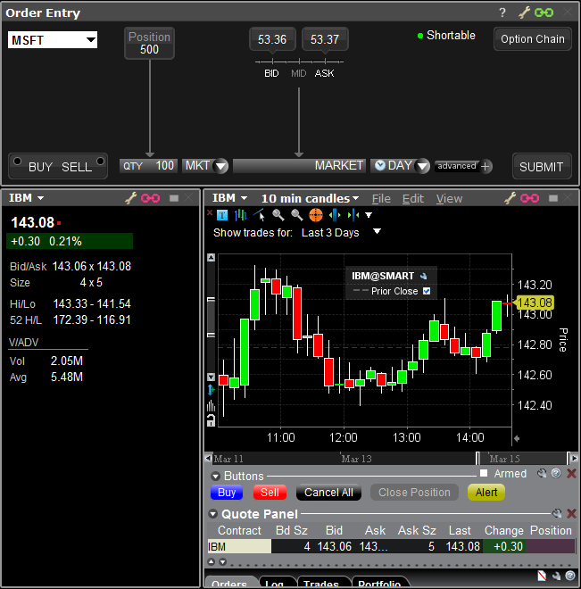

requestId: int. Request identifier used for tracking data.
contractInfo: String. An encoded value designating a unique IB contract. Possible values include:
Updates the contract displayed in a TWS Window Group.
self.updateDisplayGroup(19002, "8314@SMART")
Note: This request from the API does not get a response from TWS unless an error occurs.
In this sample we have commanded TWS Windows that chained with Group #1 to display IBM@SMART. The screenshot of TWS Mosaic to the right shows that both the pink chained (Group #1) windows are now displaying IBM@SMART, while the green chained (Group #4) window remains unchanged.
